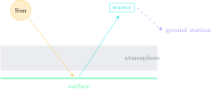

Definition
- General: acquisition of information about an object with a sensor not in contact with it.
- Operational: acquisition of information about an object by detecting and measuring the electromagnetic field emitted and/or reflected/scattered by it.
It began with photography and today works in the visible, infrared and microwave regions.
Model
Passive scenario: the Sun irradiates the surface through the atmosphere (transmittance); the surface absorbs, transmits and reflects according to its spectral signature; the reflected radiance crosses the atmosphere again and reaches the sensor. Active scenario: the sensor (radar, lidar) is its own source.
Three phases:
- acquisition: platform, sensor, on-board storage and data transmission;
- processing: improving data quality (radiometric and geometric corrections, enhancement, filtering);
- recognition: extracting information (thematic maps, change maps, bio/geo-physical parameters, risk maps, 3-D models).
Picture

Source, two passes through the atmosphere, surface interaction, sensor, downlink.
Why from space
Synoptic view at local and global scale, regular revisits, homogeneous measurements over areas with no access. Applications range from urban growth and deforestation to ozone monitoring, civil protection, agriculture, meteorology and planetary exploration.
Intuition
A remote sensing image is a physical measurement before it is a picture: every pixel is radiance integrated over a patch of ground, a band of wavelengths and a short time.
Pitfall
The sensor sees surface and atmosphere together: separating the two contributions is a problem of its own, solved by corrections, not by the sensor.